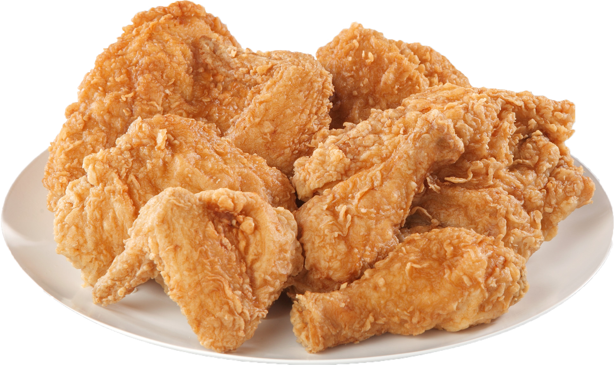

My recipe
Fried Chicken

Preparation
In order to cook fried chicken, you will need:
Steps
Preparing your chicken
- Making the flour mixture
Combine 2⅔ cups of flour, garlic salt, paprika, 2½ teaspoons of pepper and poultry seasoning in a shallow dish.
- Making the egg mixture
In another shallow dish, beat eggs and 1½ cups of water, add salt and the remaining 1⅓ cups of flour and ½ teaspoons of pepper.
- Coating the chicken
Dip chicken in the egg mixture, and then dip the chicken in the flour mixture, a few pieces at a time. Remember to turn to coat.
Frying the chicken
- Heat oil to 375°C in your deep fat fryer;
- Put the chicken several pieces at a time into fryer once the fryer is heated to 375°C;
- Fry chicken pieces 7-8 minutes on each side until golden brown and juices run clear;
- Finally, drain on paper towels.